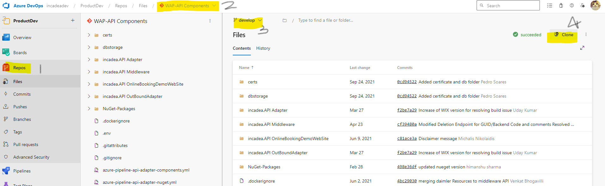

Initially, log in to Azure DevOps using your developer (ex:abc@incadeadev.com) account. Then, navigate to the
repository section by clicking on the corresponding option in the navigation bar. From there, locate and select
the project labeled 'WAP-API-Component'. Finally, clone the project by clicking on the 'Clone' button.
"Additionally, ensure that you select the 'develop' branch before proceeding with the cloning process."

Set Middleware Admin and Middleware Web as startup projects
Make sure you have downloaded postgree SQL and remember the password.
Change the password of postgree in appsettings.json file of middleware admin and middleware web.
Change the launchSettings.json file of middleware-admin project to the below code.
{
"iisSettings": {
"windowsAuthentication": false,
"anonymousAuthentication": true,
"iisExpress": {
"applicationUrl": "http://localhost:56494/",
"sslPort": 44390
}
},
"profiles": {
"IIS Express": {
"commandName": "IISExpress",
"launchBrowser": true,
"environmentVariables": {
"ASPNETCORE_ENVIRONMENT": "Development"
}
},
"incadea.api.middleware.admin": {
"commandName": "Project",
"launchBrowser": true,
"environmentVariables": {
"ASPNETCORE_ENVIRONMENT": "Development"
},
"applicationUrl": "https://localhost:5001;http://localhost:5000"
}
}
}
Comment the RunBackgroundJob in program.cs file of middleware admin project.